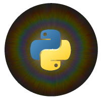

pypillometry
Preprocessing, analysis and visualization of pupillometric and eye-tracking data in Python.
pip install pypillometry
pypillometry reads recordings from eye trackers (e.g., Eyelink EDF files), cleans them (blinks, artifacts, filtering), cuts them into event-related segments and plots the results. Pupil size and gaze position of one or both eyes are kept together in a single object, and every processing step is recorded in the object’s history.
import pypillometry as pp
from pypillometry import u
d = pp.EyeData.from_eyelink("recording.edf") # read an Eyelink file
d.pupil_blinks_detect(apply_mask=True) # detect and mask blinks
d.pupil_blinks_interpolate() # interpolate them
d.pupil_lowpass_filter(cutoff=4) # 4 Hz low-pass filter
# average pupil response from 200 ms before to 1 s after each stimulus
intervals = d.get_intervals("stim", (-200, 1000) * u.ms)
erpd = d.get_segments(intervals, "left_pupil").baseline_correct((-200, 0))
erpd.plot() # event-related pupil dilation
Install the package and work through a ten-minute example from raw data to an event-related pupil response.
The concepts behind the package: data objects, eyes and variables, units, events and intervals, preprocessing and plotting.
Worked examples as Jupyter notebooks that you can run in your browser.
Every class and function, with parameters, return values and examples.
Correction of pupil foreshortening, spatial calibration and regions of interest. Usable, but the API may change.
Report bugs, contribute code and read the changelog.
Features#
Reading data from Eyelink EDF and ASC files, saved pickle files, and whole studies from a local folder or OSF
Binocular data: pupil size and gaze of both eyes in one object
Blinks: detection, merging and interpolation (Mathôt, 2013)
Filtering: low-pass filtering, smoothing, downsampling, scaling
Events and intervals with flexible selection by label, function or time
Event-related pupil dilation for single subjects and groups
Units everywhere:
3 * u.min,"200 ms",60 * u.cmInteractive viewer for long recordings and command-line tools
Modeling of tonic baseline and phasic pupil responses (Mittner & Groot, 2025)
Citing pypillometry#
If you use pypillometry in your research, please cite
Mittner, M. (2020). pypillometry: A Python package for pupillometric analyses. Journal of Open Source Software, 5(51), 2348. https://doi.org/10.21105/joss.02348
If you use the estimation of tonic and phasic pupil components (Modeling the pupil signal), please also cite
Mittner, M., & Groot, J. M. (2025). A novel method for modeling tonic and phasic pupil dynamics in humans. Behavior Research Methods, 57(9), 233. https://doi.org/10.3758/s13428-025-02755-7